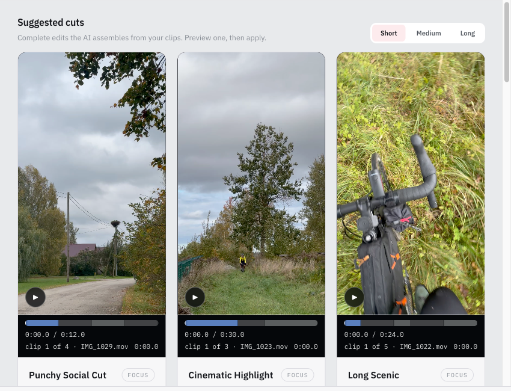

Ceļš līdz v1.0.0
Kopš v0.4.0 izlaiduma 2026. gada 4. oktobrī ir uzlabota pirmā montāža, eksports un iPhone materiālu apstrāde. Šīs izmaiņas jau ir main zarā, bet vēl nav nevienā izlaidumā. Nākamais ieteiktais izlaidums ir v0.5.0; pirms tā jānovērš auditā minētie datu saglabāšanas riski un tev jāpārbauda darbs ar īstiem materiāliem un imports Final Cut Pro un Resolve. AI pieslēgšanas vednis un v1.0.0 vēl ir priekšā.
Darba bloki kopā: . Izlaisti: ; sagatavoti: ; iesākti: ; gaida: ; plānoti: . Tie nav pabeigtu posmu vai testu skaitļi.
Ernesto, tava izvēle
Atbildes glabājas tikai šajā pārlūkā. Kopē tās ziņā, kad esi gatavs; lapa neko nenosūta. S = stundas, M = dienas, L = nedēļa vai vairāk darba.
Kas jau mainījies
Rezultāti pārbaudīti plānos un sapludinātajos PR. “Sagatavots” attiecas uz main; kvalitātes vērtējums un montāžas lietotņu testi nav aizstāti ar CI.
Pirmā montāža izmanto vairāk materiāla
Vairāki nepārklājoši klipi no vienas stabilas epizodes, atsevišķas kvotas katram Source Video un formāta maiņa tagad nonāk Timeline.
Mērījumi no 037
Estepona: 5 → 13 Candidate Clips, mediāna 3 → 20 s, pārklājums 15 → 185 s. Detox: Medium 13 → 240 s; Long 10 → 333 s no 480 s mērķa. Tie ir plāna mērījumi, nevis šodien atkārtots kvalitātes tests.
Eksports saglabā pašreizējo montāžu
Tukša Timeline vairs neatdzīvina vecos klipus. FCPXML iziet 1.10 DTD struktūras pārbaudi; mediju saites ir absolūtas.
Kas vēl jāpierāda
032 cilvēka testi ir atvērti. Audits norāda uz jauktu avotu Resolve metadatiem un neizmantotu FCP resursu risku. Savietojamību drīkst solīt tikai pēc īsta importa.
iPhone materiāli paliek pareizā secībā un kadrējumā
Nominālais 59,94 kadri/s, uzņemšanas laiks, vertikāli Review un Timeline priekšskatījumi, eksports ar Project nosaukumu un precizēta Import norise.
Redzēt retesta pierādījumu

1bacf0a). Atskaņotājs rāda portreta kadrus pareizā formātā. Projekta josla ar personīgo mapes ceļu ir izgriezta. Šis attēls nepierāda AI kļūdu apstrādi; īsts HDR un NLE imports nav apliecināti. Vecais stāvoklis nav pievienots, jo nav salīdzināma, droši apgriezta pāra.Plāni rāda vienu darbu secību
Roadmap, plānu indekss un produkta termini ir saskaņoti. Izlaistās v0.4.0 un main robeža ir pārbaudāma.
Eksperiments un izpēte ir skaidri nodalīti
#109 salabo tikai prototipa atsvaidzināšanu; #110 ir iOS izpēte. Audits nosauc atlikušos riskus un kandidāta pārbaudes.
Labojumi un atvērtie riski
Ieraksti seko 22.10.2026 auditam. A = 8. oktobra audita punkts; N = 22. oktobra jaunais atradums. “Izlabots kodā” nenozīmē, ka īpašnieks jau pārbaudījis nākamo DMG.
Izlabots kodā: eksports un iPhone plūsma
Iepriekš pastāvējušas kļūdas
Final Cut noraidīja XML, bet testi bija zaļi
- Iepriekšējā kļūda
- #80 un 10.10. retests:
assetstruktūra neatbilda DTD. - Labojums
- #100,
16b2593:media-rep, resursu formāti un racionālie laiki. - Pārbaudīts
- Plānā 032 fiksēti DTD/golden testi; audits min zaļu Tests run uz
2df0169. Final Cut tests vēl jāveic.
Suggested cuts neievēroja uzņemšanas secību
- Iepriekšējā kļūda
- Retestā Cinematic Highlight un Long Scenic sāka ar visaugstāk novērtēto klipu, pat ja tas uzņemts pēdējais.
- Labojums
- #107,
2df0169: hronoloģiskos griezumus kārto pēc capture time, tad klipa sākuma. - Pārbaudīts
- PR un 042/5.1 retests ar saglabātu ierakstu; automātiskais Tests run uz šī merge ir zaļš. Daļai profilu saglabājas apzināta score-first atlase.
Atvērts: saglabāšana un uzticama nodošana
- Audita N1 un A4: pārtraukta saglabāšana var sabojāt saglabāto projektu, un kļūda lietotājam netiek parādīta. Vispirms jānodrošina atomāra saglabāšana un atjaunošana.
- A3/A8/A9/A12: rederive/rescan un novēlotas atbildes var sajaukt saglabāto stāvokli, projektu vai export receipt.
- A10 un N2–N4: jauktu avotu Resolve metadati, nepareizas skaitļu robežas, nulles kadra eksports un nevajadzīgi FCP resursi prasa labojumus.
- #84 paliek atvērts: grounded visual editing un thematic cut proposals; saistīts ar 4. posmu. #88 (Windows) un #89 (Linux) ir pēc v1.0.0.
- A5/A6/A11 vēl nevar saukt par izlabotiem
mainzarā, kamēr #101 nav sapludināts un pārbaudīts.
Izmaiņu ieraksts
Sapludinājums pievieno kodu main, bet neizveido lietotnes izlaidumu. Kartītēs redzamas pēdējās GitHub pārbaudes nolasīšanas brīdī; tās nav šīs lapas testi.
PR statusi, nosaukumi un pārbaudes
Visi posmi un darba bloki
Saglabāti roadmap numuri 0–7, arī 1b un 1c. Tabula ietver atsevišķus eksperimenta un dokumentu blokus; statuss aptver arī atvērtos cilvēka testus.
| # | Darbs | Statuss | Posms | Kur tas ir |
|---|
Nākamās darbības
v0.5.0 ir audita ieteikums, nevis publicēts izlaidums. Owner checks before tagging un Draft v0.5.0 release notes ir pilnais saraksts.
Darbu secība un īpašnieka pārbaudes
Kvadrātiekavās norādīts roadmap posms.
Ieviešanas darbs
- Pabeigt #101 un pārbaudīt precīzo sapludināto commit [2].
- Novērst audita saglabāšanas un eksporta riskus; vēl nepieskaitīt citu aktīvo zaru darbu pie main.
- Sagaidīt zaļu CI un sagatavot abu Mac arhitektūru kandidāta DMG; tikai pēc īpašnieka pārbaudēm gatavot versijas maiņu un tagu.
- Turpināt 3. → 4. → 5. posmu; 6. posms izmanto jau gatavo atlasītāju. 7. posma parakstīšanas darbu sākt laikus.
Ernesto
- Iziet 037/H1 un 032/042 īsto materiālu un abu montāžas lietotņu testus [1, 1b, 1c].
- Pārbaudīt save/reopen, rescan, ātrumu, skaņu, kadrējumu un īstu HEVC/HDR pirms v0.5.0.
- Atbildēt uz sešiem lēmumiem; pirms 3. posma piegādes pieņemt Anthropic Commercial Terms (nodoms jau apstiprināts).
- Pirms v0.5.0 uzstādīt kandidāta DMG uz tīriem arm64 un x64 Mac datoriem, pārbaudīt versiju un atjauninājuma paziņojumu. Ja #101 iekļauts, pārbaudīt AI kļūdas un datu robežu; pēc Final Cut testa atbildēt #80 ar lūgumu atkārtot pārbaudi.
- Pirms 7. posma nodrošināt Apple dalību un notarizēta DMG pārbaudi. Sponsora saite un papildu testa materiāli paliek īpašnieka darbības ārpus koda.
Kur avoti atšķiras un ko vēl nesolām
- 032 nosaukums sola atveramu eksportu, bet cilvēka H1–H5 ir tukši un #80 atvērts. Tādēļ 1b ir “Gaida”.
- 042 vairāki sapludināti PR nav visa plāna beigas: 11/14, Phase 6 un abi cilvēka uzdevumi paliek.
- Audits fiksē 2df0169; #101 un #111 stāvoklis šajā lapā seko jaunākajai GitHub nolasīšanai, audits #111 nepiemin.
- Roadmap 4. posma nosaukums paliek spēkā; Versions noņemšana joprojām ir īpašnieka jautājums. Atskaņotāju paredzēts paturēt kā Proposal Preview.
- #108 eksperimentam īpašnieks devis vietu pirms v1.0.0, bet tas nav ierakstīts roadmap 0–7 tabulā. #109 nav šī eksperimenta piegāde.
- Native iOS memo un OKF dokumentu profils nav lietotnes funkcijas. Runtime tools daļa bija jau v0.4.0; v1.0.0 uzticamības solījums vēl nav izpildīts.